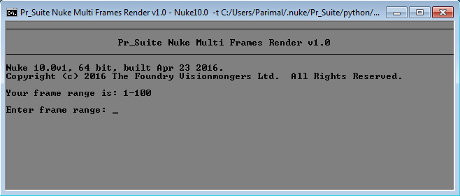
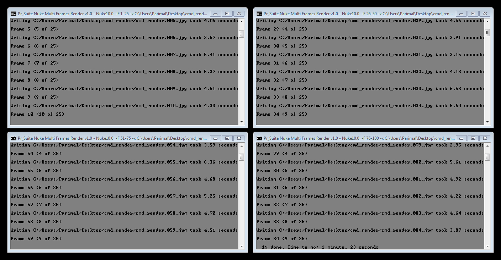

Description:
Pr_Suite Nuke Multi Frames Render is a script to render Nuke file into chunks. It will split your mentioned frame range into chunks you have specified. It will launch instance of Nuke for every chunk in terminal mode for render.
Operation:
•Right click on Nuke file and go to 'Send to' menu.
•Click on Pr_Suite Nuke Multi Frames Render.
•A terminal will open showing your Nuke's files frame range.

•Enter frame range to render.

•Enter chunks to split render into.

•Now your render is launched into chunks for faster rendering.

•Press 'Pause/Break' button on keyboard to pause render and press 'Enter' to resume render. Close terminal to exit render immediately.
Special Note:
•Nuke file should have only one Write node.
•Frame range is calculated from Write node's first and last frame, use 'limit to range' in Write node to set frame range. Otherwise it can't proceed with render.
•Up to eight chunks are allowed.
•Chunks are RAM sensitive. More chunks occupies more RAM.
•Best practice for mentioning chunks is to first calculate how much RAM your Nuke file occupies in single instance and how much RAM your computer has, for example if your Nuke file occupies 4 GB RAM and your computer has 8 GB RAM then 2 chunks are best and if your computer has 16 GB RAM then 4 chunks are best.
•Mentioning chunks beyond your RAM capacity can hang your computer.